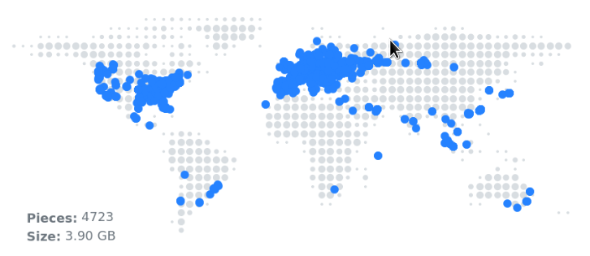
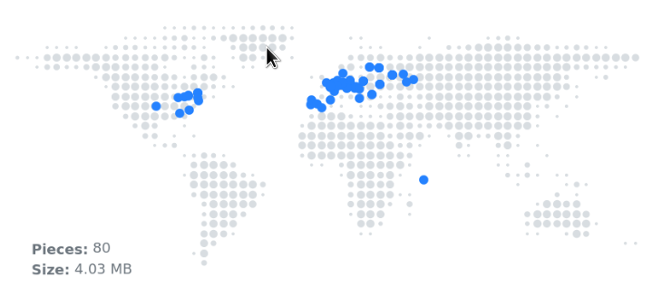

Tuesday 10 Oct 2023
Storj: The Decentralised Cloud
Image copyright
UPDATE 08/03/2024
I have now switched away from Storj. Read post here.
Big news – I have switched to Storj (pronounced storage) for my primary online storage; it’s a decentralised cloud allowing unused space at data centres and at home to be used as a storage node. There are no Storj data centres and you cannot visit your data, as it’s spread over the world. I was considering setting up my own node, approx. 1 TB, however Storj a few months ago reduced the payout to node operators and after factoring in costs it would not be feasible for me. However, if I had a 24/7 storage server with spare capacity running I would set one up.
I have switched from B2 to Storj as my primary online backup: various reasons for this, including the price rise to $0.006 from $0.004 and lack of geo-redundancy. It was annoying to have to maintain two accounts (one for US and the other for EU); other providers allow creation of buckets (S3, E2) from different regions in the same management console.
Note that AWS Deep Glacier remains my secondary and final chance.
Advantages of Storj:
- No need to add geo-redundancy (pieces of data spread out across the world so already geo-redundent).
- Faster network – chunks downloaded from nodes nearby.
- Exciting and interesting area – likely community and open-source nature.
- Low costs object storage – competitive at $0.004 which is in line with market.
- Encryption by default – user-managed keys, no trust architecture.
Segments
Storj have a concept of segments: each maximum size of a segment being 64 MB. For example, if you have a 1 MB file, this takes up 1 segment despite not being 64 MB, and a 1 GB file will be 16 segments (I believe they measure GB as 1024 MB). Segments are unique to Storj; they cost $0.0000088 per segment after you go over 10,000 segments free tier. I have reduced segments by packaging my picture folder into 5 GB chunks using 7zip. However, I do not feel you should worry about this expense. I have around 12k segments (500 GB data) which will cost about $0.02 per month. Given there are no transaction costs (PUT, GET, List and Delete) it’s not a problem.
Blocks
These 64 MB blocks are split into 80 chunks are encrypted and spread throughout the globe. As these nodes are hosted by individuals, people can lose connection or delete their nodes; Storj mitigate this by allowing a “graceful exit” whereby chunks are transferred to another node – people do this because a part of their income is set aside for this situation; however, there is likely to be a situation where one or more chunk is not accessible, but do not worry: Storj only needs 29 chunks to restore the file (this magic is achieved using erasure coding – the sample algorithm used to error correct CDs). If nodes go offline, the satellites will distribute the chunks to new nodes to keep 80 chunks.

Example of geographical distrubution of one of my 3.9 GB files, broken into 4,723 pieces.

Another example of a single photograph. 4 MB file, 80 pieces.
Rclone
As always, my favourite command-line tool is out the toolbox: rclone. For various reasons, I set-up Storj using S3 credentials, because all the network processing occurs on one of the Storj gateways, otherwise using built-in Storj processing occurs locally and sent directly to nodes (uses for bandwidth and local processing). You will need rclone 1.64 for this, otherwise any version of rclone should allow the S3 compatible mode. Generate your keys through the Storj dashboard.
Web Dashboard
On the topic of the dashboard, you first need to create a project. As a paid user, you can create 5 projects (not, strangely, not delete them). Within the projects, you create buckets. I think the projects are useful to separate billing to see which projects costs the most, and share projects with users: you may want a private project and a shared family project. I am not using the web interface, but you can easily create buckets online and set a passphrase for the contents which only you know – you unlock the buckets through your browser. I do not use this, but pretty great feature.
Download
I have hashed (SHA256) the data I store in Storj. As part of a good back-up strategy, it’s important to test restore. I have downloaded a few 5 GB archives, I created earlier with 7z, checked against saved hashes and so far worked without problem. You have 25 GB free download per month, so excellent opportunity to test. After 25 GB, downloads costs $0.007, which is steep compared to other providers, so if egress (data out / download) is important to you, look for lower price elsewhere.
Potential Problems
- I notice a lot of nodes (second most location) are located in Russia – this could potentially be a problem should they isolate themselves from the global internet.
- Running of the gateway may cease if the Storj management team stops trading. Although decentralised, there is still a managing team.
- Loss of node hosts – likely due to poorer payouts of costs of electricity to continue running.
Summary
In summary I am enjoying Storj – I love the project and quality of documentation / forums. It is fast and easy to use, and allows your favourite existing cloud tool to connect to buckets.
Backlinks:
Journal:Index
Journal:2023:10
index